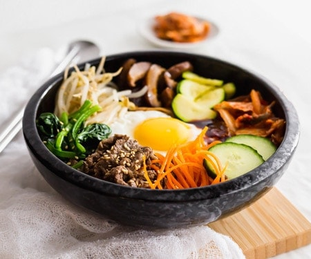

The BEST Korean Bibimbap Recipe

Healthy Beef Bulgogi Rice Bowl
This is a easy, healthy meal that's both protein packed and delicious!
Ingredients
Marinated Beef
- 2 lbs Flap Meat
- 2 tbsp Brown Sugar
- 3 tbsp Soy Sauce
- 2 tbsp Corn Syrup
- 2 tbsp Sesame Oil
- 2 tbsp Minced Garlic
- 2 tsp Black Pepper
- pinch of MSG
Side Dishes
- 1 bunch spinach
- 1 pack of bean sprouts
- 1 carrot julienned
- 1 small zucchini julienned
- 1 small green onions thinly chopped
- 1 fried egg
- 1 tbsp red pepper paste
- 1 tbsp red pepper powder
- 1 tsp furukake seasoning
Instructions
- Cut up beef in small bite sized pieces.
- Marinate meet with brown sugar and garlic first. Add in the rest of the marinade ingredients. Cover and refrigerate.
- Wash and blanch spinach and bean sprouts for 30 seconds to a minute in boiling water. Drain water and dry.
- Heat up pan on medium high and saute zucchini for 3 minutes or until softened. Transfer to bowl.
- Place wringed spinach in bowl. Drizzle with sesame oil, salt, pepper, and minced garlic. Mix.
- Transfer the drained bean sprouts to bowl. Drizzle with sesame oil, salt, pepper, red pepper powder, sesame seed, carrot, and green onion. Mix.
- Heat up frying pan and cook the marinated beef. Cook for 3-5 mins or until cooked.
- Heat up a small frying pan and cook the egg sunny side up.
- To Assemble: Add rice to bowl. Layer with veggies and meat. Top it off with the egg, red pepper paste, sesame oil, and furukake seasoning.